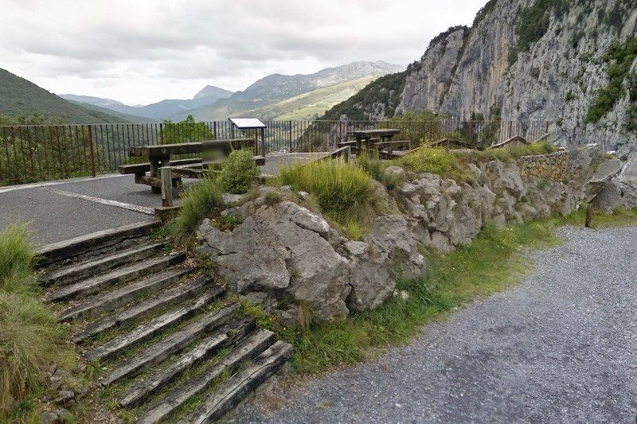
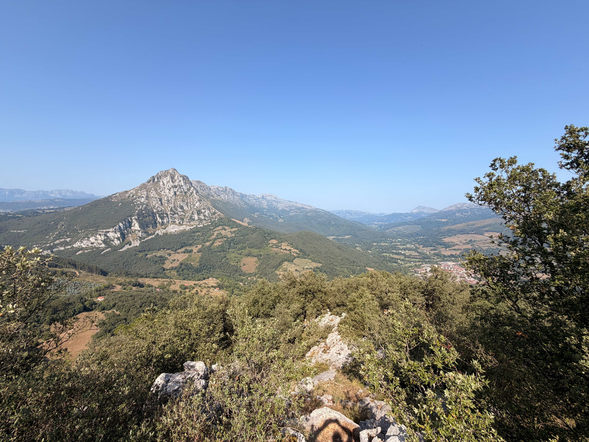
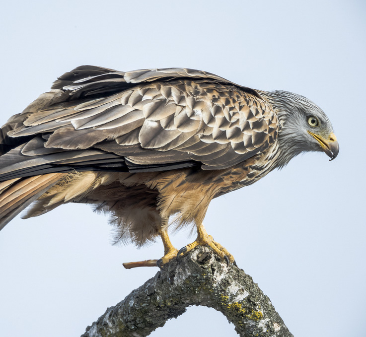
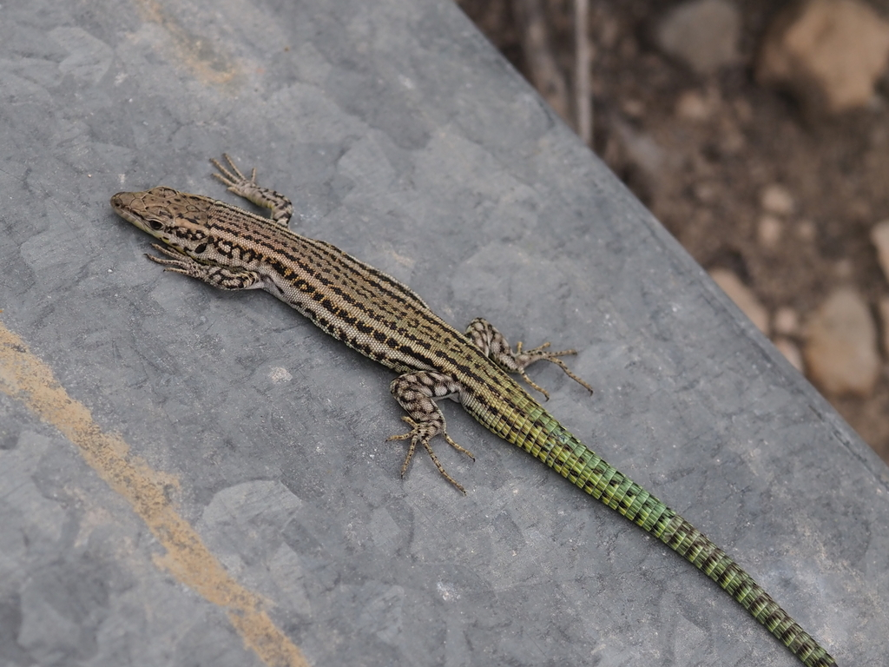

PUNTOS DEL RECORRIDO
Lugares que descubrirás durante la ruta
EL RECORRIDO
Desde el Ayuntamiento, tomamos la N-629 en dirección al Puerto de Los Tornos. A 300 metros, tras pasar el cuartel de la Guardia Civil, giramos a la izquierda por una carretera que pronto se convierte en un sendero que discurre por un encinar cantábrico. El camino bordea una imponente pared vertical de roca caliza, donde empieza la via ferrata El Cáliz.
Llegamos al aparcamiento, desde donde un sendero asciende hasta el Mirador de Covalanas, con vistas espectaculares al pueblo de Ramales, el Pico San Vicente y la Sierra del Hornijo. Continuando el ascenso, alcanzamos la entrada de la Cueva de Covalanas, decorada con pinturas rupestres de ciervas de hace más de 20.000 años. Justo debajo, la Cueva del Mirón completa este núcleo arqueológico excepcional.
Siguiendo el recorrido, llegamos a la Cueva de la Luz, antes de retomar el descenso, donde unas escaleras nos llevan hasta la Cueva el Haza, una ventana natural abierta al Pico San Vicente. El recorrido culmina en la Cueva de Cullalvera, cuya monumental entrada es uno de los rincones más impresionantes de la ruta. Desde aquí regresamos al Ayuntamiento, cerrando el círculo.
NATURALEZA
E HISTORIA
Cada paso del camino es una oportunidad para conocer el encinar cantábrico, su fauna y los vestigios prehistóricos que dan nombre a esta ruta.
EL ENCINAR CANTÁBRICO
Durante todo el paseo recorreremos y tendremos vistas a espléndidas masas de encinar cantábrico. Siendo su distribución habitual el clima mediterráneo, estos encinares tienen carácter relicto apareciendo en climas oceánicos, como el nuestro, lejos de su ambiente original.
En estos bosques, las encinas o carrascas forman un estrato arbóreo denso y oscuro, aunque tiene poca altura. Acompañando a la encina aparecen árboles como laureles, aladiernos, madroños, acebos y labiérnagos. El estrato arbustivo también es denso, con aligustre, cornejo, espino albar, rusco, endrino y cornicabra, además de trepadoras como zarzaparrilla, hiedra, liana o nueza negra.

Los encinares montanos tienden a ocupar áreas con un microclima apropiado: vertientes pronunciadas con suelos rocosos, normalmente calizos, y bien drenados. Habitualmente aparecen en las solanas de las montañas y en zonas donde los vientos tienen un efecto desecante, haciendo que la humedad sea mínima.
VIDA EN EL ENCINAR

La fauna asociada a los encinares cantábricos es muy abundante y variada. Podremos observar pequeñas aves como petirrojos, jilgueros, currucas, carboneros y herrerillos; córvidos como corneja, chova, urraca y arrendajo.
Será fácil que sobrevuele sobre nosotros alguna rapaz rupícola de las que viven asociadas a las paredes verticales de roca caliza, como buitre, halcón, búho, milano o cernícalo.
Será fácil encontrar reptiles como lagartijas y lagartos verdes tomando el sol durante la primavera y el verano.

Rapaz reconocible por su cola ahorquillada. Sobrevuela las paredes de roca caliza asociadas al encinar.

Activa durante el día, se mueve con agilidad entre las ramas de robles y castaños centenarios.

Reptil muy común en el encinar. En primavera y verano es fácil verla tomando el sol sobre las rocas.

Una de las aves más características del encinar cantábrico. Su canto melodioso acompaña todo el paseo.

El mayor mamífero del encinar. Por sus hábitos crepusculares, sus huellas son más fáciles de encontrar que el animal.
INFORMACIÓN ÚTIL
 Zona Picnic
Zona Picnic
 Apta para niños
Apta para niños
 Calzada compartida
Calzada compartida
 Apta para bicicletas
Apta para bicicletas
 Restaurante
Restaurante
¿LISTO PARA CAMINAR?
SEGUIR LA RUTA →